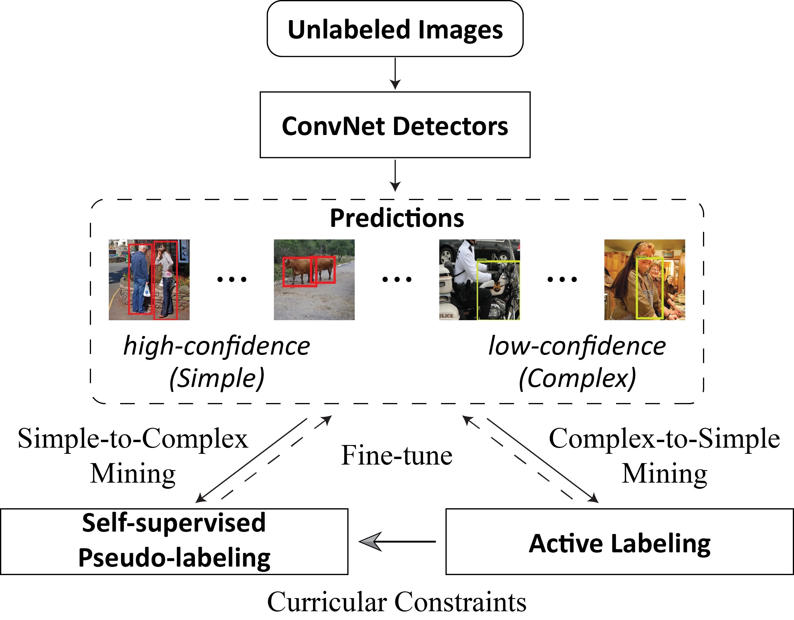
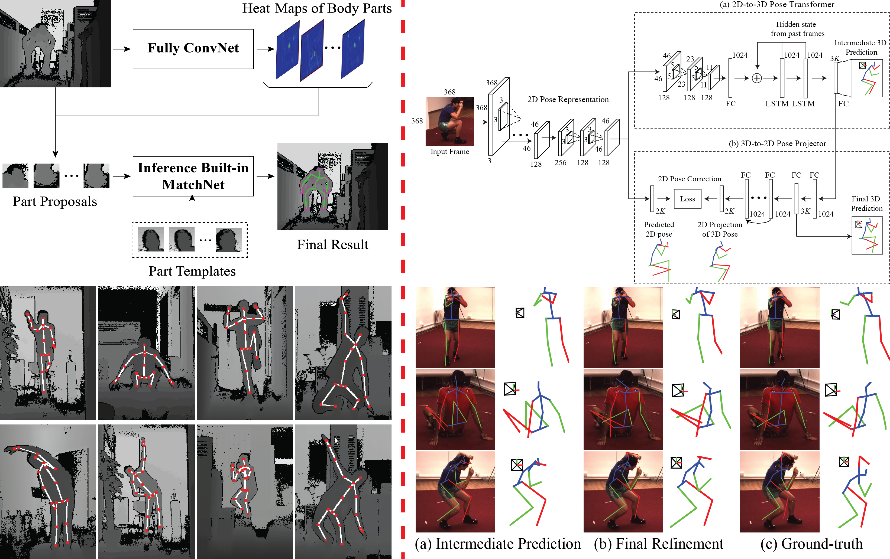

Self-driven Progressive Learning System for Large-scale Visual Recognition

We developed a rational yet cost-effective pipeline to significantly decrease the amount of user annotations for improving large-scale visual recognition (e.g., face identification and object detection). Specifically, our system mines from unlabeled and partially labeled images by automatically distinguishing the samples with high prediction confidences, which can be easily and faithfully recognized by computers via a simple-to-complex fashion, and low-confident ones, which can be labeled by active users in an interactive complex-to-simple manner.
Network Acceleration on Embedded Devices
We presented a simple yet effective strategy to design lightweight network architectures. Moreover, we have also studied the fastest convolution algorithm (i.e., winograd) and further extended it with specific optimizations for the ARM Cortex-A15 (32bit) and Cortex A72 (64bit) chips.
Human-centric Analysis System

We proposed several methods to accomplish a real-time and high-accuracy system to predict 2D/3D human poses from depth or common RGB cameras. This system works efficiently and properly on mobile devices, e.g., MiBox 3.